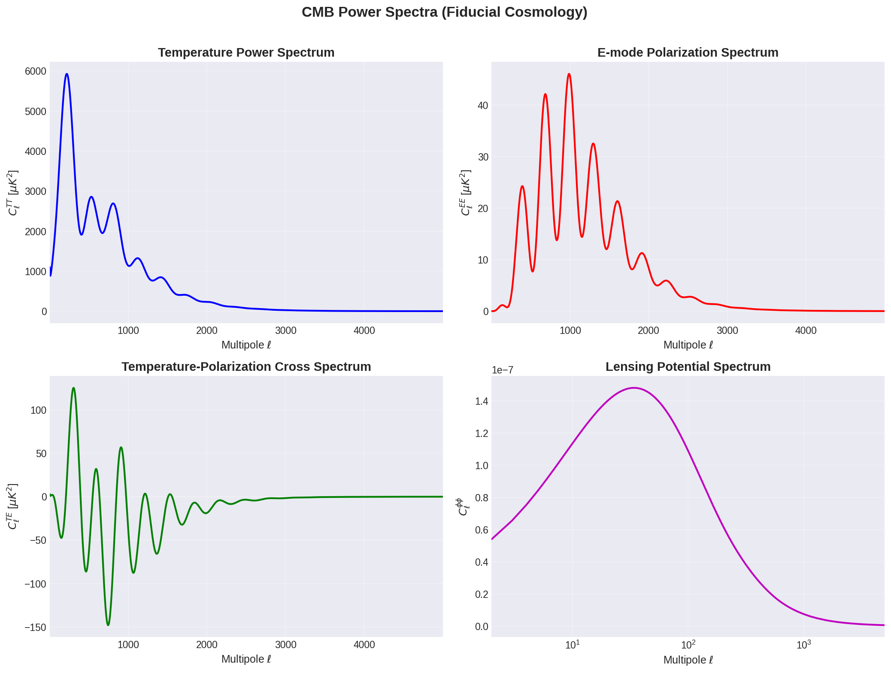
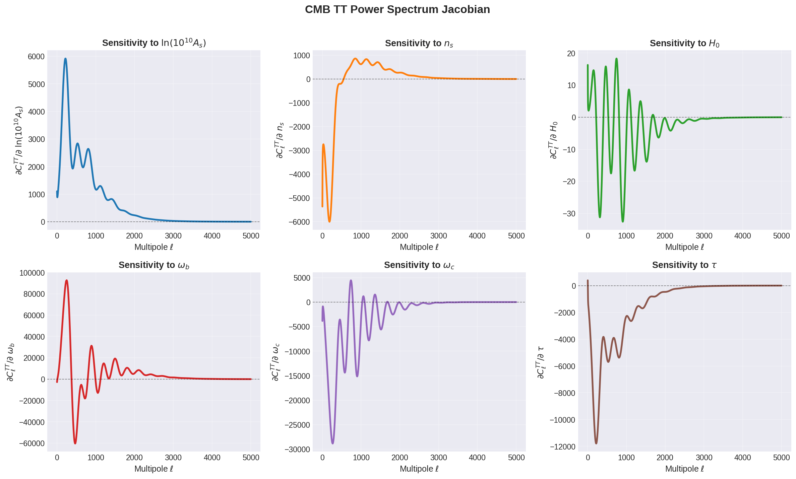

Usage Examples¶
This guide demonstrates how to use jaxcapse to compute and visualize CMB power spectra and their derivatives.
Quick Start¶
import jaxcapse
import jax.numpy as jnp
import matplotlib.pyplot as plt
# The emulators are automatically loaded when you import jaxcapse
# Access them via the trained_emulators dictionary
emulators = jaxcapse.trained_emulators["camb_lcdm"]
Computing Power Spectra¶
Basic Usage¶
# Define cosmological parameters
# Order: [omega_b, omega_c, h, ln10As, ns, tau]
params = jnp.array([
0.02237, # Baryon density
0.1200, # CDM density
0.6736, # Hubble parameter
3.044, # Log primordial amplitude
0.9649, # Spectral index
0.0544 # Optical depth
])
# Compute all power spectra
cl_tt = emulators["TT"].predict(params) # Temperature
cl_ee = emulators["EE"].predict(params) # E-mode polarization
cl_te = emulators["TE"].predict(params) # Temperature-polarization cross
cl_pp = emulators["PP"].predict(params) # Lensing potential
Plotting All Spectra¶
import matplotlib.pyplot as plt
import numpy as np
# Create multipole array (adjust based on your emulator output)
n_ells = len(cl_tt)
ell = np.arange(2, n_ells + 2)
# Create figure with subplots for all spectra
fig, axes = plt.subplots(2, 2, figsize=(12, 10))
# Plot TT spectrum
axes[0, 0].loglog(ell, ell * (ell + 1) * cl_tt / (2 * np.pi))
axes[0, 0].set_xlabel(r'$\ell$')
axes[0, 0].set_ylabel(r'$\ell(\ell+1)C_\ell^{TT}/2\pi$ [$\mu K^2$]')
axes[0, 0].set_title('Temperature Power Spectrum')
axes[0, 0].grid(True, alpha=0.3)
# Plot EE spectrum
axes[0, 1].loglog(ell, ell * (ell + 1) * cl_ee / (2 * np.pi))
axes[0, 1].set_xlabel(r'$\ell$')
axes[0, 1].set_ylabel(r'$\ell(\ell+1)C_\ell^{EE}/2\pi$ [$\mu K^2$]')
axes[0, 1].set_title('E-mode Polarization Spectrum')
axes[0, 1].grid(True, alpha=0.3)
# Plot TE spectrum (can be negative, use semilogy with abs)
cl_te_plot = ell * (ell + 1) * np.abs(cl_te) / (2 * np.pi)
axes[1, 0].loglog(ell, cl_te_plot)
axes[1, 0].set_xlabel(r'$\ell$')
axes[1, 0].set_ylabel(r'$|\ell(\ell+1)C_\ell^{TE}/2\pi|$ [$\mu K^2$]')
axes[1, 0].set_title('Temperature-Polarization Cross Spectrum')
axes[1, 0].grid(True, alpha=0.3)
# Plot PP spectrum (lensing potential)
axes[1, 1].loglog(ell, ell * (ell + 1) * cl_pp)
axes[1, 1].set_xlabel(r'$\ell$')
axes[1, 1].set_ylabel(r'$\ell(\ell+1)C_\ell^{\phi\phi}$')
axes[1, 1].set_title('Lensing Potential Spectrum')
axes[1, 1].grid(True, alpha=0.3)
plt.tight_layout()
plt.savefig('cmb_spectra.png', dpi=150, bbox_inches='tight')
plt.show()

Computing Jacobians with JAX¶
One of the powerful features of jaxcapse is that the emulators are fully differentiable using JAX's automatic differentiation.
Basic Jacobian Computation¶
import jax
import jax.numpy as jnp
# Define a function that computes TT spectrum from parameters
def compute_cl_tt(params):
"""Compute TT power spectrum for given parameters."""
return emulators["TT"].predict(params)
# Compute Jacobian using JAX autodiff
jacobian_fn = jax.jacobian(compute_cl_tt)
jacobian = jacobian_fn(params)
print(f"Jacobian shape: {jacobian.shape}")
# Output: (n_ell, n_params) - derivative of each Cl with respect to each parameter
Visualizing Parameter Sensitivities¶
# Parameter names for labeling
param_names = [r'$\omega_b$', r'$\omega_c$', r'$h$',
r'$\ln(10^{10}A_s)$', r'$n_s$', r'$\tau$']
# Create figure showing Jacobian for each parameter
fig, axes = plt.subplots(2, 3, figsize=(15, 10))
axes = axes.flatten()
for i, (ax, name) in enumerate(zip(axes, param_names)):
# Plot derivative of Cl_TT with respect to parameter i
ax.semilogx(ell, jacobian[:, i])
ax.set_xlabel(r'$\ell$')
ax.set_ylabel(rf'$\partial C_\ell^{{TT}}/\partial {name}$')
ax.set_title(f'Sensitivity to {name}')
ax.grid(True, alpha=0.3)
ax.axhline(0, color='k', linestyle='--', alpha=0.5)
plt.suptitle('CMB TT Power Spectrum Jacobian', fontsize=16)
plt.tight_layout()
plt.savefig('jacobian_tt.png', dpi=150, bbox_inches='tight')
plt.show()

Complete Example Script¶
Here's a complete script that generates all the plots:
import jaxcapse
import jax
import jax.numpy as jnp
import matplotlib.pyplot as plt
import numpy as np
# Set up parameters
params = jnp.array([0.02237, 0.1200, 0.6736, 3.044, 0.9649, 0.0544])
param_names = [r'$\omega_b$', r'$\omega_c$', r'$h$',
r'$\ln(10^{10}A_s)$', r'$n_s$', r'$\tau$']
# Get emulators
emulators = jaxcapse.trained_emulators["camb_lcdm"]
# Compute all spectra
cl_tt = emulators["TT"].predict(params)
cl_ee = emulators["EE"].predict(params)
cl_te = emulators["TE"].predict(params)
cl_pp = emulators["PP"].predict(params)
# Create ell array
n_ells = len(cl_tt)
ell = np.arange(2, n_ells + 2)
# Plot all spectra
fig, axes = plt.subplots(2, 2, figsize=(12, 10))
# ... (plotting code as shown above)
# Compute and plot Jacobian
jacobian_fn = jax.jacobian(emulators["TT"].predict)
jacobian = jacobian_fn(params)
fig, axes = plt.subplots(2, 3, figsize=(15, 10))
# ... (Jacobian plotting code as shown above)
print("All plots generated successfully!")
Tips and Best Practices¶
- Parameter ranges: Keep parameters within training ranges for accurate predictions
- JIT compilation: Use
@jax.jitfor repeated evaluations - Batch processing: Use
vmapfor multiple parameter sets - Gradient checks: Verify Jacobians have expected physical behavior
- Memory management: Emulators are loaded once at import